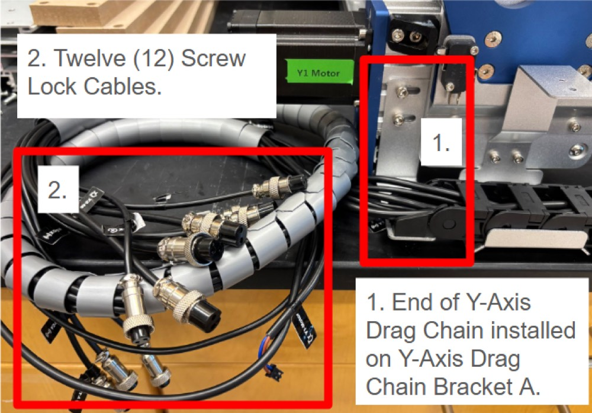
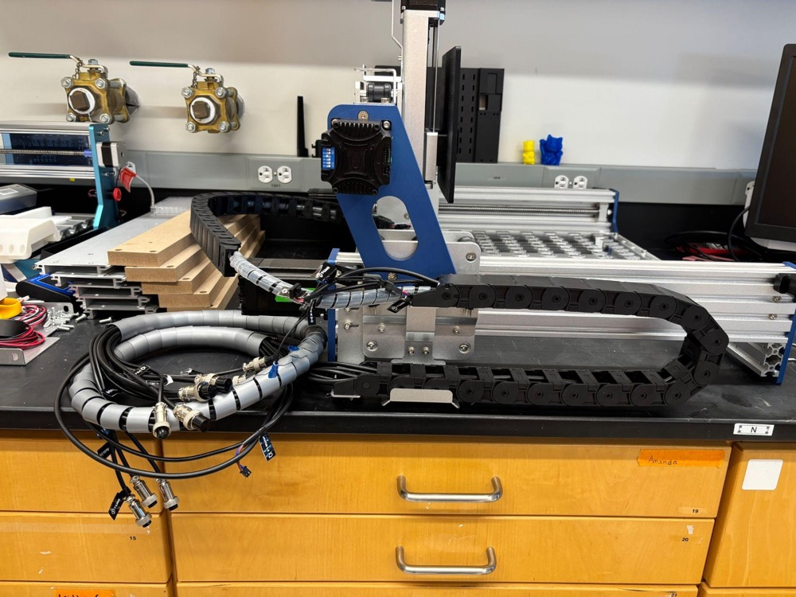
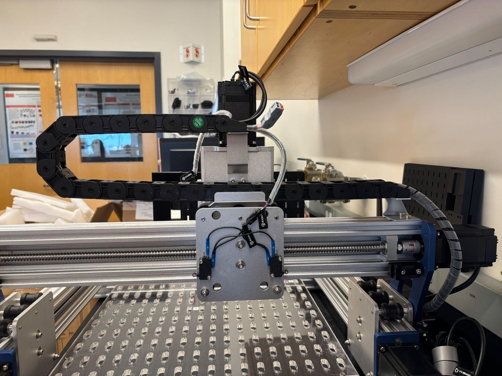

Part A of 6 · CubXL + ASMI
Assemble the gantry
Build the Genmitsu PROVerXL 4030 V2 kit, skipping the steps Ursa Labs has already done before shipping and everything to do with the spindle.
What you need
- Genmitsu PROVerXL 4030 V2 kit: XY axis base module, X-axis module with the XZ module and Z motor already fitted, X-axis motor, pre-wired X/Y drag chain, drag chain brackets, power supply, power cord and USB A-to-B cable
- The Genmitsu PROVerXL 4030 V2 user manual that came in the box (online copy)
- Screws from the kit: 8× M5 × 14 mm flat-head, 4× M4 × 12 mm socket-head, 8× M4 × 6 mm flat-head
- Hexagonal lead-screw driver and 2, 2.5, 3 and 4 mm Allen wrenches
Genmitsu's Mechanical Installation section runs steps 1–9. Each step below matches the step with the same number. Some of the kit arrives already assembled, so a few steps are skipped; where this page and the booklet disagree, follow this page. The booklet's pictures don't always match what's in the box.
Steps
1Check the Y-axis roller modulesGenmitsu step 1
The roller modules on both sides of the base should already sit behind the green tape, pushed up against the mechanical stop as close to the Y motors as they'll go. Measure from each roller module to the motor-end plate; both sides should match. If they don't, turn the Y lead screw with the hexagonal driver until they do.
2Install the X-axis moduleGenmitsu step 2
Set the X-axis module (which already carries the XZ module and Z motor) onto the base and fix it with four M5 × 14 mm flat-head screws on each side.
3Skip: XZ-axis moduleGenmitsu step 3
The XZ module is already mounted on the X-axis module, and it ships without a spindle. Ignore every spindle reference in the Genmitsu booklet.
4Install the lead-screw coupler and X-axis motorGenmitsu step 4
The coupler is already on the X motor. Push the coupler onto the X lead screw, fix the motor with four M4 × 12 mm socket-head screws, then tighten the coupler's two grub screws onto the lead screw.
5Install the Y-axis drag chain bracketsGenmitsu step 5
Fix bracket A with its two M5 × 12 mm socket-head screws and bracket B with its two M4 × 6 mm socket-head screws.
6Install the Y-axis drag chainGenmitsu step 6
The X/Y drag chain arrives with all the wiring already threaded through it. Attach the Y end to the brackets with M4 × 6 mm flat-head screws.


7Skip: X-axis drag chain bracketsGenmitsu step 7
Brackets A and B are already installed on the X-axis module.
8Install the X-axis drag chainGenmitsu step 8
Attach the free end of the X/Y drag chain to X-axis bracket B with two M4 × 6 mm flat-head screws.

9Skip: spindle mountGenmitsu step 9
There's no spindle, so leave the 52 mm and 65 mm spindle mounts as they are.
10Wire the gantry
Follow Genmitsu's wiring pages: connect the X, Y and Z limit-switch cables and the X, Y and Z motor/signal cables to the controller, then the USB cable.
Check your work
- All three motors and all three limit switches are connected; nothing is on the spindle output.
- The drag chains move freely over the full travel without pulling on any cable.
- Each axis turns smoothly by hand (with power off) using the hexagonal driver.